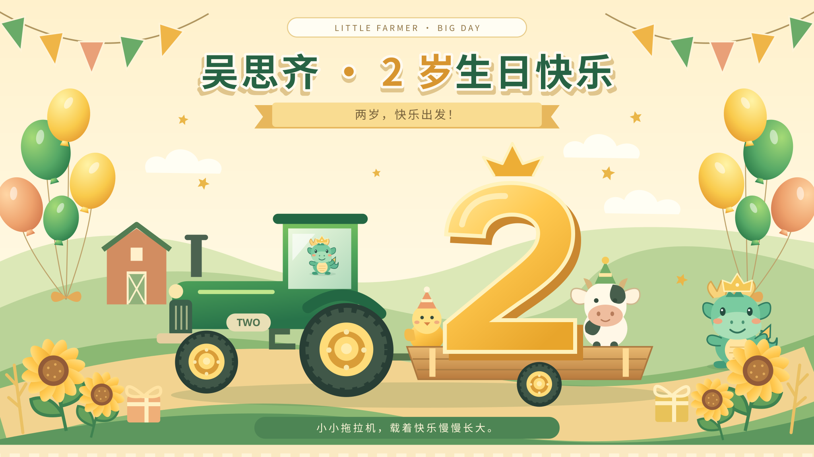
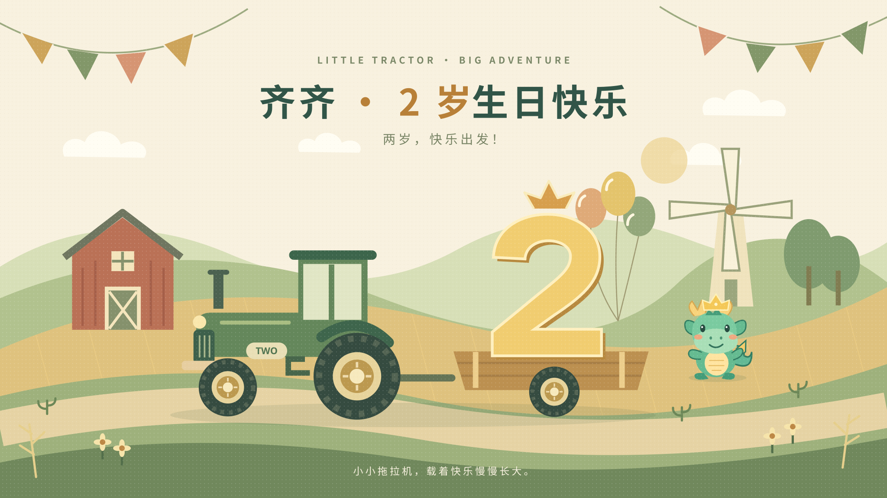
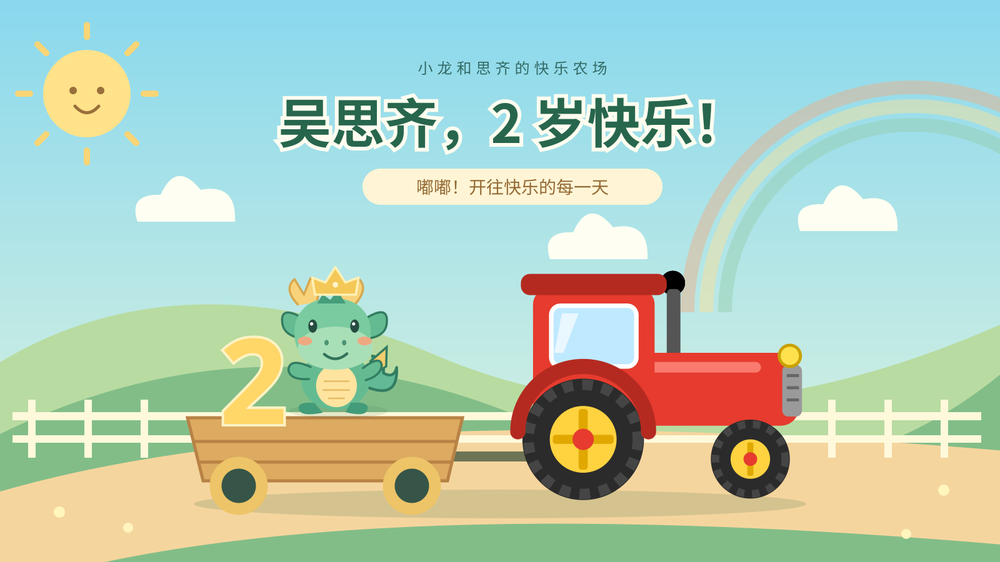

LITTLE FARMER · BIG DAY
两岁啦，
载着快乐出发！
给吴思齐的生日小世界。
和小龙坐上拖拉机，把今天变成一段暖暖的回忆。
 小龙陪你，一起长大
小龙陪你，一起长大今天，想去哪个小世界？
先选一个版本，再横屏投到电视

01 / 迎宾 · 蛋糕 · 合影
欢乐派对
金色的两岁，大大的拖拉机。
小龙和农场伙伴，陪你过生日。

02 / 柔和 · 留白 · 合影
清新简洁
云朵慢慢飘，风车轻轻转。
把温柔的农场，留在全家福里。

03 / 相册 · 唱歌 · 点点玩
小龙游乐园
和小龙打招呼，听小牛哞哞叫。
看成长照片，一起唱生日歌。
把快乐，带到大屏上
01 选一个版本进入后可切换农场和蛋糕。02 手机横过来用系统屏幕镜像连接电视。03 隐藏操作栏轻点空白处即可找回按钮。


给爸爸妈妈的现场小抄
迎宾：选「欢乐派对」，开启可用的常亮或全屏，隐藏按钮。切蛋糕：切到生日蛋糕，大家准备好了再吹灭。合影：点「合影模式」，画面就会停下来。互动：进入小龙游乐园，声音默认关闭，大人可按需开启。
成长照片只在当前浏览器里使用，不上传。刷新、关闭或切换版本后需要重新选择照片；全屏和常亮也可能需要重新开启。部分手机浏览器不支持网页全屏或常亮，可用系统设置配合。投屏依赖手机和电视的屏幕镜像，建议提前试一次。